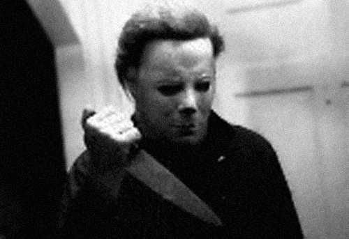
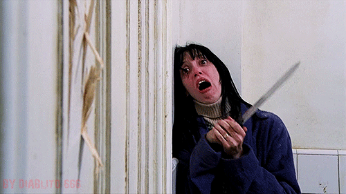
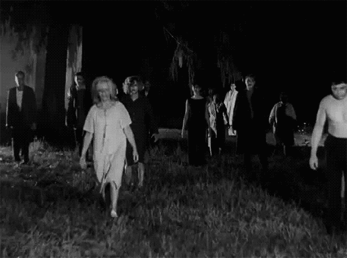
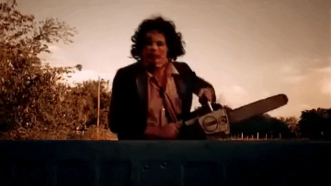
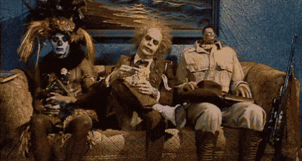
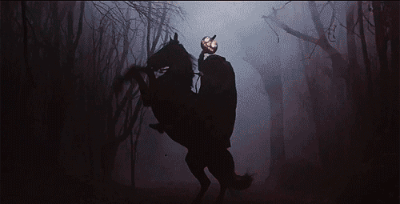
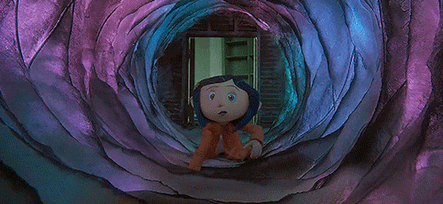
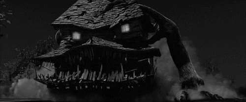
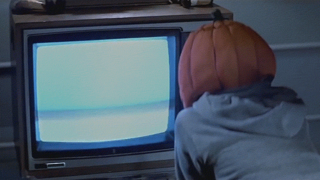

"Halloween" (1978) - O clássico filme de terror que ajudou a popularizar o slasher como gênero.
"O Iluminado" (1980) - Uma adaptação de Stephen King, dirigida por Stanley Kubrick, com uma atmosfera aterrorizante.
"A Noite dos Mortos-Vivos" (1968) - Um marco do cinema de zumbis dirigido por George A. Romero.
"O Massacre da Serra Elétrica" (1974) - Um dos filmes de terror mais icônicos, conhecido por sua intensa violência.
"Beetlejuice - Os Fantasmas se Divertem" (1988) - Uma comédia sobrenatural dirigida por Tim Burton.
"A Lenda do Cavaleiro Sem Cabeça" (1999) - Um filme de fantasia sombria dirigido por Tim Burton, inspirado no conto de Washington Irving.
"Coraline e o Mundo Secreto" (2009) - Uma animação stop-motion com um toque sombrio, baseada no livro de Neil Gaiman.
"A Casa Monstro" (2006) - Um filme animado sobre uma casa que ganha vida durante o Halloween.
"A Noite das Bruxas" (2007) - Um filme de terror sobre um grupo de crianças que enfrenta eventos sobrenaturais durante o Halloween.
